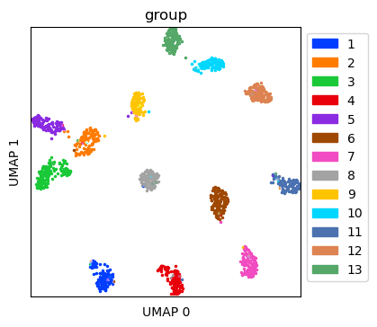
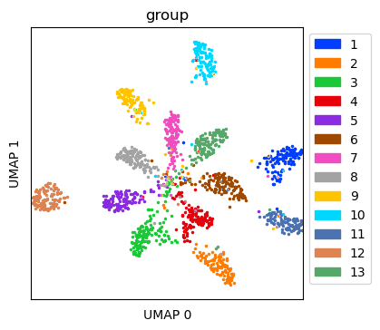
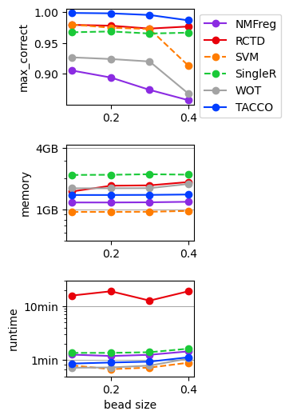

Simulated single cell expression data with ambient contamination¶
This example uses TACCO to annotate simulated single cell data, simulated using a modified variant (Moriel) of scsim (Kotliar).
(Moriel): Moriel, N. Extension of scsim single-cell RNA-sequencing data simulations. github.com/nitzanlab/scsim-ext (2023)
(Kotliar): Kotliar, D. scsim: simulate single-cell RNA-SEQ data using the Splatter statistical framework but implemented in python. github.com/dylkot/scsim (2021)
[1]:
import os
import sys
import matplotlib
import pandas as pd
import numpy as np
import scanpy as sc
import tacco as tc
from scsim import scsim
# The notebook expects to be executed either in the workflow directory or in the repository root folder...
sys.path.insert(1, os.path.abspath('workflow' if os.path.exists('workflow/common_code.py') else '..'))
import common_code
[2]:
env_path = common_code.find_path('results/env_links')
Simulate single cell data¶
Simulate data with various dropout levels with a known ground truth
[3]:
ngenes = 25000
descale = 1.0
ndoublets = 100
K = 13
nproggenes = 1000
proggroups = [1,2,3,4]
progcellfrac = .35
ncells = 1500
deprob = .025
libloc=7.64
libscale=0.78
deloc = 5.0
seed=2
# simulating true counts (in simulator.counts)
simulator = scsim(ngenes=ngenes, ncells=ncells, ngroups=K, libloc=libloc, libscale=libscale,
mean_rate=7.68,mean_shape=0.34, expoutprob=0.00286,
expoutloc=6.15, expoutscale=0.49,
diffexpprob=deprob, diffexpdownprob=0., diffexploc=deloc, diffexpscale=descale,
bcv_dispersion=0.448, bcv_dof=22.087, ndoublets=ndoublets,
nproggenes=nproggenes, progdownprob=0., progdeloc=deloc,
progdescale=descale, progcellfrac=progcellfrac, proggoups=proggroups,
cellbender=True, cb_ambient=False, #cb_droploc=0, cb_dropscale=1,
cb_dispshape=1, cb_dispscale=1,
minprogusage=.1, maxprogusage=.7, seed=seed)
simulator.simulate()
Simulating cells
Simulating gene params
Simulating program
Simulating DE
Simulating cell-gene means
- Getting mean for activity program carrying cells
- Getting mean for non activity program carrying cells
- Normalizing by cell libsize
Simulating doublets
Adjusting means
Simulating counts with cellbender
[4]:
reference = sc.AnnData(simulator.counts, obs=simulator.cellparams, var=simulator.geneparams[[]])
reference.obs['group'] = reference.obs['group'].astype('category')
[5]:
# get counts with ambient RNA (cellbender)
simulator.cb_ambient=True
fraclibs = [0.1,0.2,0.3,0.4]
sdatas = {}
for fraclib in fraclibs:
simulator.cb_fraclib=fraclib
simulator.simulate_cellbender()
adata = sc.AnnData(simulator.counts, obs=simulator.cellparams, var=simulator.geneparams[[]])
adata.obs['group'] = adata.obs['group'].astype('category')
sdatas[fraclib] = adata
Plotting options¶
[6]:
highres = False
default_dpi = 100.0
if highres:
matplotlib.rcParams['figure.dpi'] = 648.0
hr_ext = '_hd'
else:
matplotlib.rcParams['figure.dpi'] = default_dpi
hr_ext = ''
axsize = np.array([3,3])*1.0
Visualize simulated data without ambient RNA¶
Create UMAP for the simulated data without ambient RNA
[7]:
ref_umap = tc.utils.umap_single_cell_data(reference)
fig = tc.pl.scatter(ref_umap, keys='group', position_key='X_umap', joint=True, point_size=5, axsize=axsize, noticks=True,
axes_labels=['UMAP 0','UMAP 1']);
SCumap...SCprep...time 2.08986759185791
time 29.57620406150818

Visualize simulated data with ambient RNA¶
Create UMAP for the simulated data with ambient RNA
[8]:
tdata = sdatas[0.4]
tdata_umap = tc.utils.umap_single_cell_data(tdata)
fig = tc.pl.scatter(tdata_umap, keys='group', position_key='X_umap', joint=True, point_size=5, axsize=axsize, noticks=True,
axes_labels=['UMAP 0','UMAP 1']);
SCumap...SCprep...time 2.0295157432556152
time 9.373483657836914

Annotate the data with dropout with cell types¶
Annotation is done on cell type level with multi_center=10 to capture variation within a cell type
[9]:
tc.tl.annotate(tdata, reference, 'group', result_key='TACCO', multi_center=10, assume_valid_counts=True)
Starting preprocessing
Annotation profiles were not found in `reference.varm["group"]`. Constructing reference profiles with `tacco.preprocessing.construct_reference_profiles` and default arguments...
Finished preprocessing in 3.0 seconds.
Starting annotation of data with shape (1500, 18014) and a reference of shape (1500, 18014) using the following wrapped method:
+- platform normalization: platform_iterations=0, gene_keys=group, normalize_to=adata
+- multi center: multi_center=10 multi_center_amplitudes=True
+- bisection boost: bisections=4, bisection_divisor=3
+- core: method=OT annotation_prior=None
mean,std( rescaling(gene) ) 1.5871269020101537 1.1511302432419972
bisection run on 1
bisection run on 0.6666666666666667
bisection run on 0.4444444444444444
bisection run on 0.2962962962962963
bisection run on 0.19753086419753085
bisection run on 0.09876543209876543
Finished annotation in 18.54 seconds.
[9]:
AnnData object with n_obs × n_vars = 1500 × 25000
obs: 'group', 'libsize', 'has_program', 'program_usage', 'is_doublet', 'group2'
uns: 'TACCO_mc10'
obsm: 'TACCO_mc10', 'TACCO'
varm: 'TACCO_mc10'
Benchmark annotation methods on the simulated dropout data¶
Define parameters for the annotation methods to use
[10]:
methods = {
'NMFreg':{'method': 'NMFreg',},
'RCTD':{'method': 'RCTD', 'conda_env': f'{env_path}/RCTD_env',},
'SVM':{'method':'svm',},
'SingleR':{'method':'SingleR', 'conda_env': f'{env_path}/SingleR_env',},
'WOT':{'method': 'WOT',},
'TACCO': {'method': 'OT', 'multi_center': 10,},
}
[11]:
results = {}
for fraclib in fraclibs:
for method,params in methods.items():
print(f'running method {method} for fraclib {fraclib} ...', end='')
try:
results[(fraclib,method)] = tc.benchmarking.benchmark_annotate(sdatas[fraclib],reference,annotation_key='group',**params, assume_valid_counts=True);
except:
pass # catch failing methods
print(f'done')
running method NMFreg for fraclib 0.1 ...done
running method RCTD for fraclib 0.1 ...done
running method SVM for fraclib 0.1 ...done
running method SingleR for fraclib 0.1 ...done
running method WOT for fraclib 0.1 ...done
running method TACCO for fraclib 0.1 ...done
running method NMFreg for fraclib 0.2 ...done
running method RCTD for fraclib 0.2 ...done
running method SVM for fraclib 0.2 ...done
running method SingleR for fraclib 0.2 ...done
running method WOT for fraclib 0.2 ...done
running method TACCO for fraclib 0.2 ...done
running method NMFreg for fraclib 0.3 ...done
running method RCTD for fraclib 0.3 ...done
running method SVM for fraclib 0.3 ...done
running method SingleR for fraclib 0.3 ...done
running method WOT for fraclib 0.3 ...done
running method TACCO for fraclib 0.3 ...done
running method NMFreg for fraclib 0.4 ...done
running method RCTD for fraclib 0.4 ...done
running method SVM for fraclib 0.4 ...done
running method SingleR for fraclib 0.4 ...done
running method WOT for fraclib 0.4 ...done
running method TACCO for fraclib 0.4 ...done
[12]:
for (fraclib,method),result in results.items():
unused_key = tc.utils.find_unused_key(sdatas[fraclib].obsm)
sdatas[fraclib].obsm[unused_key] = results[(fraclib,method)]['annotation']
max_correct = tc.ev.compute_err(sdatas[fraclib], unused_key, 'group', err_method='max_correct')[unused_key]
del sdatas[fraclib].obsm[unused_key]
results[(fraclib,method)]['max_correct'] = max_correct
[13]:
res_df = pd.DataFrame([
[fraclib,method,v['max_correct'],v['max_mem_usage_GB'],v['benchmark_time_s']]
for (fraclib,method),v in results.items()
],columns=['fraclib','method','max_correct','memory (GB)','time (s)'])
quantities = [c for c in res_df.columns if c not in ['fraclib','method'] ]
methods = res_df['method'].unique()
[14]:
fig,axs = tc.pl.subplots(1,len(quantities), axsize=np.array([4,3])*0.4, x_padding=0.7, y_padding=0.5)
colors = {m:common_code.method_color(m) for m in methods}
styles = {m:common_code.method_style(m) for m in methods}
res_df = res_df.loc[~res_df[quantities].isna().all(axis=1)]
for iy_ax, qty in enumerate(quantities):
ax = axs[iy_ax,0]
x = res_df['fraclib']
y = res_df[qty]
if qty == 'time (s)': # part 1 of adding second, minute and hour marker: plot the lines under the data
ynew = np.array([0.1,1,10,60,600,3600,36000])
ynew_minor = np.concatenate([np.arange(0.1,1,0.1),np.arange(1,10,1),np.arange(10,60,10),np.arange(60,600,60),np.arange(600,3600,600),np.arange(3600,36000,3600)]).flatten()
ynewlabels = np.array(['0.1s','1s','10s','1min','10min','1h','10h'])
ymin = y.min() * 0.5
ymax = y.max() * 2.0
ynewlabels = ynewlabels[(ynew > ymin) & (ynew < ymax)]
ynew = ynew[(ynew > ymin) & (ynew < ymax)]
ynew_minor = ynew_minor[(ynew_minor > ymin) & (ynew_minor < ymax)]
for yn in ynew:
ax.axhline(yn, color='gray', linewidth=0.5)
elif qty == 'memory (GB)':
ynew = np.array([0.1,0.4,1,4,10,40,100])
ynew_minor = np.concatenate([np.arange(0.1,1,0.1),np.arange(1,10,1),np.arange(10,100,10),np.arange(100,1000,100)]).flatten()
ynewlabels = np.array(['0.1GB','0.4GB','1GB','4GB','10GB','40GB','100GB'])
ymin = y.min() * 0.5
ymax = y.max() * 2.0
ynewlabels = ynewlabels[(ynew > ymin) & (ynew < ymax)]
ynew = ynew[(ynew > ymin) & (ynew < ymax)]
ynew_minor = ynew_minor[(ynew_minor > ymin) & (ynew_minor < ymax)]
for yn in ynew:
ax.axhline(yn, color='gray', linewidth=0.5)
for m in methods:
selector = res_df['method'] == m
if selector.sum() == 0:
continue
ax.plot(x[selector],y[selector],label=m,marker='o',color=colors[m],ls=styles[m],)
if iy_ax == axs.shape[0] - 1:
ax.set_xlabel('bead size')
if qty == 'time (s)':
ax.set_ylabel('runtime')
elif qty == 'memory (GB)':
ax.set_ylabel('memory')
else:
ax.set_ylabel(f'{qty}')
if qty in ['time (s)','memory (GB)']:
ax.set_yscale('log')
if qty in ['time (s)','memory (GB)']: # part 2 off adding second, minute and hour marker: add the second y axis after rescaling the first y axis to log scale
ax.set_yticks(ynew_minor,minor=True)
ax.set_yticks(ynew)
ax.set_yticklabels(ynewlabels)
ax.set_yticklabels([],minor=True)
if iy_ax == 0:
ax.legend(bbox_to_anchor=(1, 1), loc='upper left', ncol=1)

[ ]: